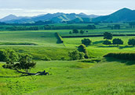

Waikato
Just 90 minutes drive south of Auckland brings you to the lush green pastures of Waikato. Home to New Zealand's fourth largest city (Hamilton), this diverse region boasts the country's longest river, the permanent location for the Hobbiton Movie Set and the world famous Waitomo (Glowworm) Caves.
It is New Zealand's most important dairy region and is the site of the Ruakura Research Centre, internationally known for dairy research. The mighty Waikato river (420 kms in length) runs through the region's main centre, Hamilton. Historically, the river was an important waterway for steam boats and Maori Canoes.
Hamilton
Hamilton is a modern city with a buzzing Cafe culture and offers visitors many attractions such as the beautiful Hamilton Gardens (covering an area of 58 hectares). Other places in the City worth visiting include the Hamilton Zoo and the Waikato Museum of Art and History and the permanent Maori display (featuring Te Winika, a war canoe and a Tainui carving). Another major drawcard for the city is the annual Hot Air Balloon Festival which takes place every Autumn.